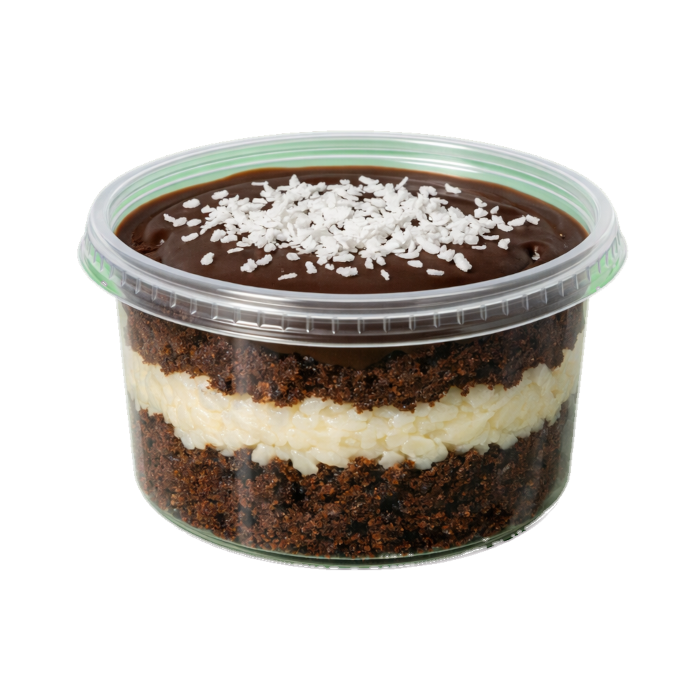

Pequenos potes.
Grandes momentos.
Descubra a receita perfeita de felicidade embalada em potes de puro carinho.
Conhecer Nossa História ↓
NOSSO PROPÓSITO
Mais que açúcar,
Mais que açúcar,
criamos memórias.
O MyCakes nasceu na feira de Matemática Financeira com uma missão simples, mas poderosa: provar que grandes momentos não precisam de grandes espaços. Nossos bolos de pote são planejados matematicamente para equilibrar sabor, cremosidade e afeto.
❤️ Amor
Ingredientes selecionados e feitos de forma artesanal.
📐 Precisão
O equilíbrio perfeito entre massa, calda e recheio.
🌱 Qualidade
Frescor do primeiro ao último pedaço.
Nossos Principais Produtos
Bolos De Pote


Chocolate
Nosso bolo de chocolate é feito com massa fofinha e recheio cremoso que derrete na boca.
- Massa de chocolate premium
- Recheio super cremoso
- Cobertura deliciosa


Morango
Um bolo leve e refrescante, feito com camadas de creme suave e morangos selecionados.
- Massa leve e macia
- Creme bem saboroso
- Com Morangos Frescos

